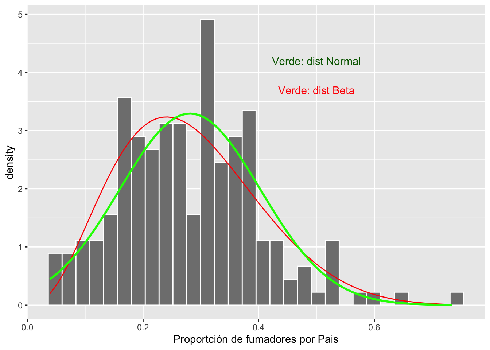
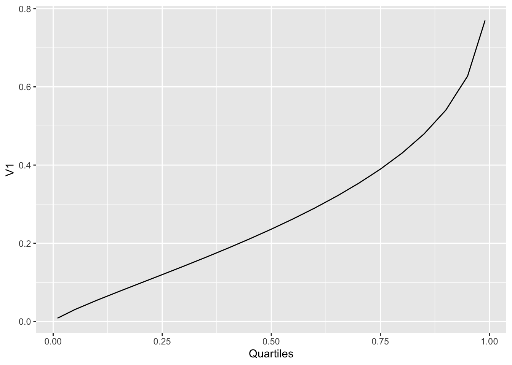

Regressión beta

 #Un cambio para modificar los gráficos
#Un cambio para modificar los gráficos
library(ggplot2)
rlt_theme <- theme(axis.title.y = element_text(colour="grey20",size=15,face="bold"),
axis.text.x = element_text(colour="grey20",size=15, face="bold"),
axis.text.y = element_text(colour="grey20",size=15,face="bold"),
axis.title.x = element_text(colour="grey20",size=15,face="bold"))+
theme_bw()Regressión beta
El método presentado aquí es bastante innovador (2010 en adelante). Desafortunadamente no hay mucha información en la literatura o el web sobre el método. Puede encontrar información suplementaria en el Vignette del paquete betareg.
Referencias:
Cribari-Neto, F., and Zeileis, A. (2010). Beta Regression in R. Journal of Statistical Software, 34(2), 1–24. http://www.jstatsoft.org/v34/i02/.
Grün, B., Kosmidis, I., and Zeileis, A. (2012). Extended Beta Regression in R: Shaken, Stirred, Mixed, and Partitioned. Journal of Statistical Software, 48(11), 1–25. http://www.jstatsoft. org/v48/i11/.
La regresión beta es una aproximación bajo GLM. La regresión beta modela variables dependientes distribuidas con la distribución beta. Datos con la distribución beta incluyen proporciones y razones, donde los valores \(x\) se encuentran entre 0 y 1 pero no inclusivo (i.e. \(0< x< 1\)). Además de producir una regresión que máxima la verosimilitud (tanto para la media como para la precisión de una respuesta distribuida en beta), se proporcionan estimaciones con corrección de sesgo.
Los valores de la variable de respuesta satisfacen \(0 < x< 1\). Por consecuencia tiene valores que son 0 o 1, es necesario cambiarlos a 0= 0.001 y 1 = 0.999. Los números no pueden ser 0 ni 1, deben ser mayores que 0 y menores que 1.
El paquete “betareg” y sus datos. Tenga en cuenta que el enfoque del modelo GLM es desarrollar una regresión con la respuesta a través de una función de enlace y un predictor lineal. Igual como GLM normal, existen numerosas funciones de enlace, que pueden ser útil como “logit”, “probit”, “cloglog”, “cauchit”, “log”, “loglog”.
Casi toda la información que se estará presentando aquí proviene de Cribari-Neto y Zeileis (Beta Regression in R).
Consulte el pdf, https://cran.r-project.org/web/packages/betareg/betareg.pdf para obtener una descripción del paquete y más detalles.
Estaré usando datos diferentes a lo que se presenta en el paquete para demostrar el valor de los análisis.
Primer paso, que es una distribución beta?
Lo más importante de la distribución beta es que los valores NUNCA son menores de 0 ni mayores de 1 (i.e. \(0 <x < 1\)). En adición los intervalos de confianza tampoco no pueden ser ni menor de 0 ni mayor de 1.
## ── Attaching packages ─────────────────────────────────────── tidyverse 1.3.0 ──## ✓ tibble 3.0.4 ✓ dplyr 1.0.2
## ✓ tidyr 1.1.2 ✓ stringr 1.4.0
## ✓ readr 1.4.0 ✓ forcats 0.5.0
## ✓ purrr 0.3.4## ── Conflicts ────────────────────────────────────────── tidyverse_conflicts() ──
## x dplyr::filter() masks stats::filter()
## x dplyr::lag() masks stats::lag()Aquí una serie de distribuciones beta. La distribución beta se calcula con dos parametros, shape 1 o \(\alpha\) y shape 2 o \(\beta\). No vamos a entrar en estos parámetros, aunque pueden ir a la pagina de Wikipedia para tener más información. Deben fijarse en que si los parámetros no sin iguales (\(\alpha \neq \beta\)) la distribución no es simétrica. Siempre hay una cola que se extiende en los valores pequeños o grandes.
Propoción de fumadores por diferentes paises.
Los datos provienen de World Bank en el siguiente enlace, Smokers. Se encuentra información sobre 187 pais y la proporción de población mayor de 15 años que fuman.
Los datos están debajo pestaña de “Los Datos”
##
## ── Column specification ────────────────────────────────────────────────────────
## cols(
## Country_Name = col_character(),
## Country_Code = col_character(),
## Indicator_Name = col_character(),
## Indicator_Code = col_character(),
## Y2000 = col_double(),
## Y2005 = col_double(),
## Y2010 = col_double(),
## Y2011 = col_double(),
## Y2012 = col_double(),
## Y2013 = col_double(),
## Y2014 = col_double(),
## Y2015 = col_double(),
## Y2016 = col_double()
## )Primero vamos a convertir los datos en proporción ya que el programa tiene que utilizar datos mayor de 0 y menor de 1. Seleccionamos el año 2000 y creamos un histograma de la distribución.
Convertir el promedio y varianza en shape
Convertir el promedio y la varianza de los datos en los valores del shape \(\alpha\) y \(\beta\). Se usa la siguiente para calcular los shapes. Los valores esperado y la varianza se comportan de forma distinta.
\(E(X) = \frac{\alpha}{\alpha+\beta}\), \(V(X) = \frac{\alpha\beta}{(\alpha+\beta+1)(\alpha+\beta)^2}\)
El \(\alpha\) refiere al promedio y \(\beta\) a la varianza. Usamos la siguiente función.
estBetaParams <- function(mu, var) {
alpha <- ((1 - mu) / var - 1 / mu) * mu ^ 2
beta <- alpha * (1 / mu - 1)
return(params = list(alpha = alpha, beta = beta))
}
#mean(Smokers$Y2000P)
#var(Smokers$Y2000P)
estBetaParams((mean(Smokers$Y2000P)), (var(Smokers$Y2000P)))## $alpha
## [1] 3.592488
##
## $beta
## [1] 9.181559Smokers$Y2000P=(Smokers$Y2000)/100 # convertir en proporción
x <- seq(0, 1, len = 100)
mean(Smokers$Y2000P)## [1] 0.2812334## [1] 0.01467551ggplot(Smokers, aes(Y2000P))+
geom_histogram(aes(y=..density..), colour="white", fill="grey50")+
stat_function(aes(x = Smokers$Y2000P, y = ..y..), fun = dbeta, colour="red", n = 100,
args = list(shape1 = 3.593, shape2 = 9.185))+
stat_function(fun = dnorm,
args = list(mean = mean(Smokers$Y2000P, na.rm = TRUE),
sd = sd(Smokers$Y2000P, na.rm = TRUE)),
colour = "green", size = 1)+
xlab("Proportción de fumadores por Pais")+
annotate("text", x = .5, y = 4.2, label = "Verde: dist Normal", color="darkgreen")+
annotate("text", x = .5, y = 3.7, label = "Verde: dist Beta", color="red")## `stat_bin()` using `bins = 30`. Pick better value with `binwidth`.
Calculando el intervalo de confianza del promedio de una distribución beta. Se necesita los siguientes paquetes simpleboot , boot.
## Simple Bootstrap Routines (1.1-7)library(boot) # paquete para calcular el intervalo de confianza de una distribución beta
n=187 # El tamaño de muestra de los datos
alpha = 3.593 # estimado de la función arriba
beta = 9.185
x = rbeta(n, alpha, beta)
x.boot = one.boot(x, median, R=10^4) # Aquí se usa la mediana, pq el promedio *mean* sera sesgado a la derecha.
boot.ci(x.boot, type="bca")## BOOTSTRAP CONFIDENCE INTERVAL CALCULATIONS
## Based on 10000 bootstrap replicates
##
## CALL :
## boot.ci(boot.out = x.boot, type = "bca")
##
## Intervals :
## Level BCa
## 95% ( 0.2595, 0.2986 )
## Calculations and Intervals on Original ScaleVisualización de la distribución
Sobreponemos el intervalo de confianza de la mediana sobre la distribución beta
ggplot(Smokers, aes(Y2000P))+
geom_histogram(aes(y=..density..), bins=20, colour="white", fill="grey50")+
stat_function(aes(x = Smokers$Y2000P, y = ..y..), fun = dbeta, colour="red", n = 100,
args = list(shape1 = 3.593, shape2 = 9.185))+
geom_vline(xintercept =0.2320, colour="blue")+ # El intervalo de confianza del promedio
geom_vline(xintercept =0.2768, colour="blue")+
rlt_theme+
xlab("Proporción de fumadores por Pais")
library(betareg) # El paquete para hacer regresión beta
library(ggversa) # paquete para los datos
attach(dipodium)
head(dipodium, n=4)## # A tibble: 4 x 21
## `Tree Number` `Tree species` DBH `Plant number` `Ramet number` Distance
## <int> <chr> <dbl> <int> <int> <dbl>
## 1 1 E.o 75 1 1 2.47
## 2 1 E.o 76 2 1 1.97
## 3 2 E.o 76 3 1 1.95
## 4 3 E.o 58 4 1 3.24
## # … with 15 more variables: Orientation <dbl>, Number_of_Flowers <int>,
## # Height_Inflo <int>, Herbivory <chr>, RowPosition_NF <int>,
## # Number_Flowers_position <int>, Number_of_fruits <int>, Perc_FR_set <dbl>,
## # pardalinum_or_roseum <chr>, Fruit_position_effect <int>,
## # Frutos_si_o_no <int>, P_or_R_Infl_Lenght <chr>, `Num of fruits` <int>,
## # Species_Name <chr>, `Cardinal orientation` <int>Regresión beta, proporción de frutos por cantidad de flores

from this webpage: https://binalongbungalows.wordpress.com/tasmanian-orchids/dipodium-roseum-rosy-hyacinth-orchid-0615-web/
Ahora haremos el primer análisis de regresión donde nuestra respuesta es una proporción.
Los datos provienen de una especie de orquidea de Australia, Dipodium roseum, recolectado por RLT en 2004-2005. Vamos a evaluar la relación entre el número de flores y la proporción de frutos por planta. El primer paso es asegarar que no haya valores de 0 y 1. En este caso no hay ni una planta que tiene 100% de frutos, pero si hay individuos que tienen cero frutos.
RECUERDA x >0 y <1. NO se acepta 0 o 1. Entonces a los valores de 0 se le puede añadir un valor mínimo como 0.001 y a los 1 restar 0.001. En realidad esta modificación no impacta la interpretación de los resultados.
se remueva también del archivo los NA.
Nota que el modelo se construye como un modelo lineal betareg(y~x, data =na.omit(df)). Las variables del archivo son PropFR, el proporción de frutos (número de frutos/números de flores) por cada individuo y el número de flores, Number_of_Flowers.
## # A tibble: 6 x 21
## `Tree Number` `Tree species` DBH `Plant number` `Ramet number` Distance
## <int> <chr> <dbl> <int> <int> <dbl>
## 1 1 E.o 75 1 1 2.47
## 2 1 E.o 76 2 1 1.97
## 3 2 E.o 76 3 1 1.95
## 4 3 E.o 58 4 1 3.24
## 5 4 E.o NA 5 1 0.85
## 6 5 E.o 59 6 1 2.62
## # … with 15 more variables: Orientation <dbl>, Number_of_Flowers <int>,
## # Height_Inflo <int>, Herbivory <chr>, RowPosition_NF <int>,
## # Number_Flowers_position <int>, Number_of_fruits <int>, Perc_FR_set <dbl>,
## # pardalinum_or_roseum <chr>, Fruit_position_effect <int>,
## # Frutos_si_o_no <int>, P_or_R_Infl_Lenght <chr>, `Num of fruits` <int>,
## # Species_Name <chr>, `Cardinal orientation` <int>library(tidyverse)
dipodium$PropFR=dipodium$Perc_FR_set+0.0001 # solucionar para remover los cero
#dipodium$PropFR
dipodium2=dipodium %>%
select(PropFR, Number_of_Flowers,Height_Inflo, Distance) %>%
filter(complete.cases(PropFR, Number_of_Flowers,Height_Inflo, Distance))
#dipodium2
write.csv(x=dipodium2, file="dipodium2.csv")
library(readr)
dipodium2 <- read_csv("Data/dipodium2.csv")## Warning: Missing column names filled in: 'X1' [1]##
## ── Column specification ────────────────────────────────────────────────────────
## cols(
## X1 = col_double(),
## PropFR = col_double(),
## Number_of_Flowers = col_double(),
## Height_Inflo = col_double(),
## Distance = col_double()
## )modelpropFr=betareg(PropFR~Number_of_Flowers+Height_Inflo+Distance, data =na.omit(dipodium2))
summary(modelpropFr)##
## Call:
## betareg(formula = PropFR ~ Number_of_Flowers + Height_Inflo + Distance,
## data = na.omit(dipodium2))
##
## Standardized weighted residuals 2:
## Min 1Q Median 3Q Max
## -3.8613 -0.4046 0.2672 0.8535 1.2798
##
## Coefficients (mean model with logit link):
## Estimate Std. Error z value Pr(>|z|)
## (Intercept) -3.796016 0.727139 -5.220 1.78e-07 ***
## Number_of_Flowers 0.076200 0.028247 2.698 0.00698 **
## Height_Inflo 0.006054 0.017847 0.339 0.73444
## Distance -0.111010 0.093825 -1.183 0.23674
##
## Phi coefficients (precision model with identity link):
## Estimate Std. Error z value Pr(>|z|)
## (phi) 4.8382 0.9982 4.847 1.25e-06 ***
## ---
## Signif. codes: 0 '***' 0.001 '**' 0.01 '*' 0.05 '.' 0.1 ' ' 1
##
## Type of estimator: ML (maximum likelihood)
## Log-likelihood: 113.9 on 5 Df
## Pseudo R-squared: 0.2757
## Number of iterations: 19 (BFGS) + 2 (Fisher scoring)Visualizar un grafico de regresión beta
dipodiumbeta=dipodium2[,c("Number_of_Flowers","PropFR")] # crear un df con solamente las columnas de interes
dp2=dipodiumbeta[complete.cases(dipodiumbeta),] # remover los "NA"
modelpropFr=betareg(PropFR~Number_of_Flowers, data=dp2) # El modelo con solamente la explicativa
summary(modelpropFr)##
## Call:
## betareg(formula = PropFR ~ Number_of_Flowers, data = dp2)
##
## Standardized weighted residuals 2:
## Min 1Q Median 3Q Max
## -3.3221 -0.3181 0.2414 0.8225 1.2346
##
## Coefficients (mean model with logit link):
## Estimate Std. Error z value Pr(>|z|)
## (Intercept) -3.88360 0.44251 -8.776 < 2e-16 ***
## Number_of_Flowers 0.08259 0.01803 4.581 4.62e-06 ***
##
## Phi coefficients (precision model with identity link):
## Estimate Std. Error z value Pr(>|z|)
## (phi) 4.6947 0.9699 4.84 1.3e-06 ***
## ---
## Signif. codes: 0 '***' 0.001 '**' 0.01 '*' 0.05 '.' 0.1 ' ' 1
##
## Type of estimator: ML (maximum likelihood)
## Log-likelihood: 112.9 on 3 Df
## Pseudo R-squared: 0.2538
## Number of iterations: 18 (BFGS) + 1 (Fisher scoring) #head(dp2)
#dp2$PropFR
predict(modelpropFr, type = "response") # calcular los valores estimados (predichos)## 1 2 3 4 5 6 7
## 0.02568523 0.02783519 0.03015954 0.04856508 0.05679268 0.05679268 0.05679268
## 8 9 10 11 12 13 14
## 0.06138242 0.06138242 0.06138242 0.06138242 0.06138242 0.06138242 0.06631700
## 15 16 17 18 19 20 21
## 0.06631700 0.07161801 0.07161801 0.07161801 0.07161801 0.07730766 0.07730766
## 22 23 24 25 26 27 28
## 0.07730766 0.08340872 0.08340872 0.08994433 0.08994433 0.08994433 0.08994433
## 29 30 31 32 33 34 35
## 0.09693789 0.10441284 0.10441284 0.10441284 0.10441284 0.10441284 0.11239245
## 36 37 38 39 40 41 42
## 0.11239245 0.12089957 0.12089957 0.12089957 0.12089957 0.12089957 0.12089957
## 43 44 45 46 47 48 49
## 0.12995632 0.12995632 0.12995632 0.12995632 0.12995632 0.13958381 0.14980172
## 50 51 52 53 54 55 56
## 0.14980172 0.14980172 0.17207828 0.17207828 0.17207828 0.17207828 0.19690033
## 57 58 59 60 61 62
## 0.19690033 0.22433274 0.22433274 0.23903102 0.27035714 0.28695536dp2$response=predict(modelpropFr, type = "response")
#dp2$link=predict(modelpropFr, type = "link")
dp2$precision=predict(modelpropFr, type = "precision")
dp2$variance=predict(modelpropFr, type = "variance")
dp2$quantile_.01=predict(modelpropFr, type = "quantile", at = c(0.01))
dp2$quantile_.05=predict(modelpropFr, type = "quantile", at = c(0.05))
dp2$quantile_.10=predict(modelpropFr, type = "quantile", at = c(0.10))
dp2$quantile_.15=predict(modelpropFr, type = "quantile", at = c(0.15))
dp2$quantile_.20=predict(modelpropFr, type = "quantile", at = c(0.20))
dp2$quantile_.25=predict(modelpropFr, type = "quantile", at = c(0.25))
dp2$quantile_.30=predict(modelpropFr, type = "quantile", at = c(0.30))
dp2$quantile_.35=predict(modelpropFr, type = "quantile", at = c(0.35))
dp2$quantile_.40=predict(modelpropFr, type = "quantile", at = c(0.40))
dp2$quantile_.45=predict(modelpropFr, type = "quantile", at = c(0.45))
dp2$quantile_.50=predict(modelpropFr, type = "quantile", at = c(0.50))
dp2$quantile_.55=predict(modelpropFr, type = "quantile", at = c(0.55))
dp2$quantile_.60=predict(modelpropFr, type = "quantile", at = c(0.60))
dp2$quantile_.65=predict(modelpropFr, type = "quantile", at = c(0.65))
dp2$quantile_.70=predict(modelpropFr, type = "quantile", at = c(0.70))
dp2$quantile_.75=predict(modelpropFr, type = "quantile", at = c(0.75))
dp2$quantile_.80=predict(modelpropFr, type = "quantile", at = c(0.80))
dp2$quantile_.85=predict(modelpropFr, type = "quantile", at = c(0.85))
dp2$quantile_.90=predict(modelpropFr, type = "quantile", at = c(0.90))
dp2$quantile_.95=predict(modelpropFr, type = "quantile", at = c(0.95))
dp2$quantile_.99=predict(modelpropFr, type = "quantile", at = c(0.99))
dp2## # A tibble: 62 x 26
## Number_of_Flowe… PropFR response precision variance quantile_.01 quantile_.05
## <dbl> <dbl> <dbl> <dbl> <dbl> <dbl> <dbl>
## 1 3 0.0001 0.0257 4.69 0.00439 3.86e-18 2.42e-12
## 2 4 0.0001 0.0278 4.69 0.00475 7.44e-17 1.66e-11
## 3 5 0.0001 0.0302 4.69 0.00514 1.14e-15 9.81e-11
## 4 11 0.0001 0.0486 4.69 0.00811 2.75e-10 3.20e- 7
## 5 13 0.0358 0.0568 4.69 0.00941 5.29e- 9 2.21e- 6
## 6 13 0.0938 0.0568 4.69 0.00941 5.29e- 9 2.21e- 6
## 7 13 0.0001 0.0568 4.69 0.00941 5.29e- 9 2.21e- 6
## 8 14 0.0001 0.0614 4.69 0.0101 1.96e- 8 5.21e- 6
## 9 14 0.364 0.0614 4.69 0.0101 1.96e- 8 5.21e- 6
## 10 14 0.105 0.0614 4.69 0.0101 1.96e- 8 5.21e- 6
## # … with 52 more rows, and 19 more variables: quantile_.10 <dbl>,
## # quantile_.15 <dbl>, quantile_.20 <dbl>, quantile_.25 <dbl>,
## # quantile_.30 <dbl>, quantile_.35 <dbl>, quantile_.40 <dbl>,
## # quantile_.45 <dbl>, quantile_.50 <dbl>, quantile_.55 <dbl>,
## # quantile_.60 <dbl>, quantile_.65 <dbl>, quantile_.70 <dbl>,
## # quantile_.75 <dbl>, quantile_.80 <dbl>, quantile_.85 <dbl>,
## # quantile_.90 <dbl>, quantile_.95 <dbl>, quantile_.99 <dbl>#modelpropFr$precision
#quantile_many=predict(modelpropFr, type = "quantile", at=c(.99))
#quantile_manyAl construir la figura para la regresión beta, una de las principales ventajas de utilizar este enfoque es que los cuartiles se calcula con una distribución beta. Por lo tanto, el margen de error NO baja de 0 y NO pasa de 1.
Evalua la siguiente figura en cada x hay una distribución beta, donde la linea roja representa una mediana, las lineas verdes son los cuartiles 25 y 75 y las lineas azules las percentilas 5 y 95. NOTA que la distribución no es simétrica, y cambia a travez de la regresión.
library(ggplot2)
ggplot(dp2, aes(x=Number_of_Flowers, y=PropFR))+
geom_point(width = 0.05, height = 0.01)+
geom_line(aes(y=quantile_.05), linetype="twodash", colour="blue")+
geom_line(aes(y=quantile_.25),linetype=2, colour="green")+
geom_line(aes(y=quantile_.50), colour="red")+
geom_line(aes(y=quantile_.75), linetype=2, colour="green")+
geom_line(aes(y=quantile_.95), linetype="twodash", colour="blue")+
ylab("Predicción de la proporción de frutos")+
xlab("Números de Flores")+
annotate("text", x=25, y=0.50, label="95th quartile", fontface="italic")+
annotate("text", x=32, y=0.39, label="75th quartile", fontface="italic")+
annotate("text", x=33, y=0.14, label="25th quartile", fontface="italic")+
annotate("text", x=33, y=0.27, label="Median", fontface="italic")+
annotate("text", x=35, y=-0.02, label="5th quartile", fontface="italic")+
theme(axis.title.y = element_text(colour="grey20",size=20,face="bold"),
axis.text.x = element_text(colour="grey20",size=20,face="bold"),
axis.text.y = element_text(colour="grey20",size=20,face="bold"),
axis.title.x = element_text(colour="grey20",size=20,face="bold"))+
theme(legend.position="none")+
rlt_theme## Warning: Ignoring unknown parameters: width, height
## Saving 7 x 5 in imageEsto es una representación de las distribuciones beta en las x, número de flores. En rojo simulamos la distribución de la proporción esperada de frutos en plantas que tienen 15 flores y en la linea azul simulamos la distribución esperada de la proporción de frutos en plantas con 30 flores.
***
Evaluando la distribución de beta para valores específicos de x= Proporción de frutos por plantas basado en la cantidad de flores en la planta.
Seleccionar los diferentes valores de x y calcular el promedio y la varianza y convertir estos en \(\alpha\) y \(\beta\). Con estos parámetros se puede construir la densidad de la distribución por cada valor de x.
Se seleccionan valores específicos para la visualizar la distribución, las plantas que tienen 25, 30 y 35 flores. Se tiene que reorganizar los datos para calcular el promedio y la varianza.
dpQ=dp2 %>%
select(c(1, 6:26))
dpQ2=dpQ%>%
filter(Number_of_Flowers== 13) %>% select(c(2:22))%>% t %>% as.data.frame
dpQ2$Quartiles=c(.01, 0.05, .1, .15, .2, .25, .30, .35, .4, .45, .5, .55, .6, .65, .7,.75, .8, .85, .9, .95, .99 )
mean(dpQ2$V1, na.rm=FALSE)## [1] 0.06453931## [1] 0.01296751
Usando la varianza calculada en el chunk anterior, se puede calcular el \(\alpha\) y el \(\beta\).
estBetaParams <- function(mu, var) {
alpha <- ((1 - mu) / var - 1 / mu) * mu ^ 2
beta <- alpha * (1 / mu - 1)
return(params = list(alpha = alpha, beta = beta))
}
#mean(Smokers$Y2000P)
#var(Smokers$Y2000P)
estBetaParams(0.2757771,0.04226223)## $alpha
## [1] 1.027498
##
## $beta
## [1] 2.698331Producción de los gráficos. Se observa que para las plantas que tienen 25 y 30 flores la densidad esta sesgada a la izquierda, en otra palabra la probabilidad de tener pocas frutos domina la distribuciones.
##
## Attaching package: 'gridExtra'## The following object is masked from 'package:dplyr':
##
## combinea=ggplot(dipodium2, aes(PropFR))+
stat_function(aes(x = dipodium2$PropFR, y = ..y..), fun = dbeta, colour="red", n = 62,
args = list(shape1 =0.5418068, shape2 =3.135593))+
annotate("text", label="x=25 flores", x=0.1, y=10)+
ylab("Beta \nDensity")+
xlab("Probabilidad de tener frutos")
b=ggplot(dipodium2, aes(PropFR))+
stat_function(aes(x = dipodium2$PropFR, y = ..y..), fun = dbeta, colour="blue", n = 62,
args = list(shape1 = 0.7549048, shape2 =2.949404))+
annotate("text", label="x=30 flores", x=0.1, y=5)+
ylab("Beta \nDensity")+
xlab("Probabilidad de tener frutos")
c=ggplot(dipodium2, aes(PropFR))+
stat_function(aes(x = dipodium2$PropFR, y = ..y..), fun = dbeta, colour="black", n = 62,
args = list(shape1 = 1.027498, shape2 =2.698331))+
annotate("text", label="x=35 flores", x=0.1, y=2)+
ylab("Beta \nDensity")+
xlab("Probabilidad de tener frutos")
tresDensidad=grid.arrange(a,b,c, ncol=1)
## TableGrob (3 x 1) "arrange": 3 grobs
## z cells name grob
## 1 1 (1-1,1-1) arrange gtable[layout]
## 2 2 (2-2,1-1) arrange gtable[layout]
## 3 3 (3-3,1-1) arrange gtable[layout]## Saving 7 x 5 in image“Activities reported in this website was supported by the National Institute of General Medical Sciences of the National Institutes of Health under Award Number R25GM121270. The content is solely the responsibility of the authors and does not necessarily represent the official views of the National Institutes of Health.”